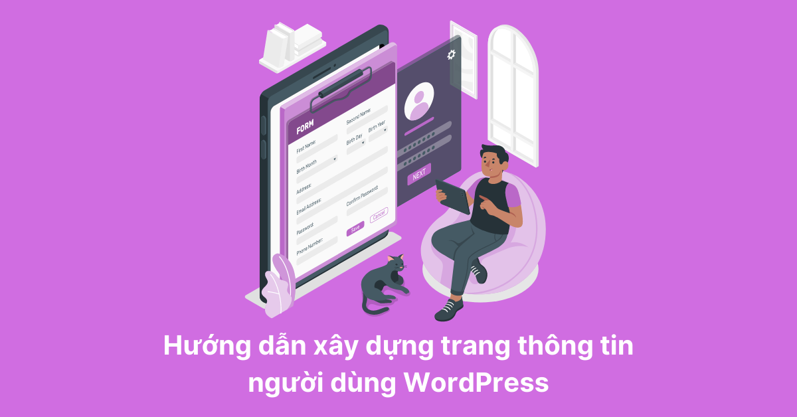

Chào các bạn! Các bài viết trước mình đã hướng dẫn các bạn xây dựng thành công form đăng nhập, đăng ký và quên mật khẩu.
Hôm nay để tiếp nối series Custom tài khoản WordPress mình sẽ hướng dẫn các bạn tạo trang thông tin người dùng WordPress. Cho phép người dùng có thể chỉnh sửa thông tin cá nhân của họ ở bên ngoài giao diện.
Giống như các bài viết trước, mình sẽ tạo một trang mới có tiêu đề là Thông tin người dùng và đường dẫn là domain/thong-tin-nguoi-dung. Sau đó hay tạo một file PHP trong theme hiện tại của bạn với tên page-thong-tin-nguoi-dung.php. Khi tạo file thành công, hãy thêm đoạn code dưới đây vào nhé.